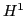
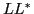

Least-squares finite element methods are designed around the idea of minimizing discretization error in an appropriate norm. For sufficiently regular, elliptic-like problems, a first-order system least squares (FOSLS) approach may be continuous and coercive in the

norm, yielding solutions accurate in . For problems posed in high aspect ratio domains (e.g., flow through a long channel), approximations on coarse resolutions may have error whose
(FOSLL
Newton's method is a typical outer iteration for an efficient finite
element approximation of nonlinear partial differential equations. We
present the framework for an inexact Newton iteration based on a
FOSLL approximation to each linearization step and establish theory
for convergence. Numerical results are presented for a
velocity-vorticity-pressure formulation of the steady incompressible
Navier-Stokes equations, and we discuss extensions and comparisons to the
more typical Newton-FOSLS approach.
approximation to each linearization step and establish theory
for convergence. Numerical results are presented for a
velocity-vorticity-pressure formulation of the steady incompressible
Navier-Stokes equations, and we discuss extensions and comparisons to the
more typical Newton-FOSLS approach.